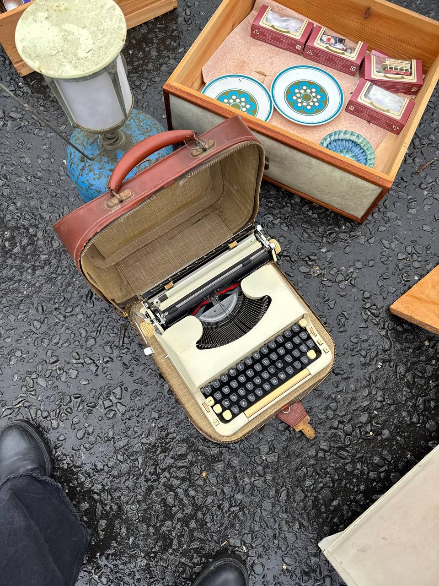

Last updated: 1 May 2026
Best UK Online Auction Sites for Resellers (2026)
The best UK online auction sites for resellers are The Saleroom, Easy Live Auction, Bidspotter, John Pye Auctions, and i-Bidder. They differ in fees, buyer’s premium, and collection rules — with Easy Live being the cheapest for multi-lot buyers (£3 flat fee per sale), The Saleroom strongest for antiques and fine art, and John Pye unbeatable for returns and liquidation volume if you have a van.
UK online auctions are how a lot of professional resellers source — once you understand the fees and the collection logistics, the margins can be better than UK car boot sales without the 5am alarm. But the “cheap online auction” story is misleading: between buyer’s premium, the platform’s own internet fee, VAT on top, and storage if you can’t collect fast enough, a £100 hammer can land at £150+ on the invoice.
This is a comparison of the five UK online auction platforms most resellers use. All facts below are from each platform’s own help pages or T&Cs — The Saleroom and Bidspotter are owned by Auction Technology Group (LSE: ATG), Easy Live is independent, and John Pye is its own multi-site auction house.
“The hammer price is half the cost. Once you add buyer’s premium, platform fee, VAT and the petrol to drive to a depot, a £100 hammer can land at £150+ — the lesson is to always work out the ‘total to door’ before bidding.” — Oleksandr Prudnikov, FlipperHelper developer and active reseller
Last verified: 1 May 2026 against the official help/FAQ pages for each platform.

Quick comparison
| Platform | Type | Buyer’s premium | Platform fee | Best for |
|---|---|---|---|---|
| The Saleroom | Aggregator | Set per house, ~20–28%+VAT | ~4.95% on hammer | Antiques, fine art, ceramics, jewellery |
| Easy Live Auction | Aggregator | Set per house | £3 flat / sale OR 3%+VAT | Frequent bidders — cheapest if you win multiple lots in one sale |
| Bidspotter UK | Aggregator | Set per house, ~12.5–25%+VAT | ~2–3%+VAT | Industrial, plant, machinery, insolvency liquidation |
| John Pye | Single house | 25%+VAT (flat) | None separately | Returns / liquidation volume reseller with a van |
| i-Bidder | Aggregator | Set per house, ~20–25%+VAT | ~3%+VAT (verify on lot) | Retail-returns, pallets, consumer electronics |
None of the five offer a dedicated native iOS or Android app for bidding — everything is browser-based, which matters for live-sale connectivity. Make sure you’re on Wi-Fi or a strong 4G signal before a live auction starts.
The Saleroom — antiques and fine art
The Saleroom (the-saleroom.com) is the largest UK aggregator for antiques, art, and collectables. Owned by Auction Technology Group (ATG, listed on the LSE). The Saleroom group covers thousands of UK auctioneers in fine art, ceramics, jewellery, militaria, and books.
- Type: Aggregator. Hundreds of UK provincial auction houses
- Online fee: ~4.95% on the hammer price (per their own support article). Some auctioneers are configured at 3%, but 4.95% is the platform standard
- Buyer’s premium: Set by individual house. Typical UK fine-art houses are 20–28% + VAT
- VAT: VAT applies on the buyer’s premium. For some lots (e.g. brand-new electricals, “VAT-Y” lots), VAT also applies on the hammer price itself
- Collection: Collection-only by default. Mail Boxes Etc partnership (Auction Logistics) for delivery on participating lots
- Trustpilot: ~4 stars / ~1,363 reviews
- Best for: UK reseller targeting antiques, ceramics (Royal Doulton, Moorcroft, Wedgwood), jewellery, silver, books, prints
Reseller voice from r/Antiques: “The Saleroom has the breadth — if you’re looking for a specific maker or category you’ll find a relevant house running it within a week. The 4.95% adds up, though — on a £20 lot you’re paying nearly £1 just in platform fee.”
Easy Live Auction — cheapest for frequent bidders
Easy Live Auction (easyliveauction.com) is independent (UK Ltd company, Eastbourne). Aggregator format like The Saleroom but with a unique pricing option: flat £3 inc VAT per sale if you opt for the “Flat Fee” mode, instead of a percentage on every lot.
- Two pricing options (per their support docs):
- Flat Fee: £3 inc VAT per auction, charged on registration. Live sales only, not timed auctions
- Free Registration: 3% + VAT added to invoice
- Buyer’s premium: Set per house
- Collection: Per house, collection-only default
- Trustpilot: 3.1/5 / ~765 reviews (79% 5-star, 11% 1-star — typical aggregator pattern)
- Best for: Multi-lot bidders. The maths flips fast — if you win 4 lots at £100 each, Saleroom takes ~£20 in online fees, Easy Live takes £3
If you’re new to online auctions and you’re going to bid on multiple lots in one sale, Easy Live is the lowest-friction starting point.
Bidspotter UK — industrial and trade
Bidspotter UK (bidspotter.co.uk) is also owned by ATG. Industrial, trade, plant and machinery, insolvency. Its own page title says it: not the right platform for antiques resellers but the right platform for workshop tools, catering equipment, IT, pallet lots from administrations.
- Type: Aggregator (industrial)
- Online fee: ~2–3% + VAT typical (per-auction, varies by house)
- Buyer’s premium: ~12.5–25% + VAT
- Collection: Collection-only default. Lots are often very large (forklifts, CNC kit) — need a van or trailer
- Payment: Tight — typically 24–48 hours
- Trustpilot: 2.1/5 (“Poor”) — mostly complaints about specific auction houses, not the platform itself
- Best for: Workshop tools, catering kit, IT equipment, insolvency liquidations. Skip if you sell antiques
John Pye Auctions — volume returns and liquidation
John Pye (johnpye.co.uk) is a single auction house, not an aggregator. Multi-site operation across Birmingham, Bo’ness (Edinburgh), Chesterfield, Marchington, Nottingham (HQ), and Zaragoza. Sources include Amazon returns, retailer overstocks, ex-display, police seizures, and insolvency stock.
- Type: Single auction house, multiple sites
- Buyer’s premium: 25% + VAT (flat). VAT also applies on the hammer for many lots (electricals etc.)
- Worked example from their own help page: £100 hammer = £150 invoice on a VAT-Y electricals lot
- Payment:
- Vehicles: 4pm the working day after sale end
- Retail / public auctions: per auction, typically 1–2 working days
- Faster Payment / BACS / debit / credit. 1.5% surcharge on commercial credit cards. No cash, no Amex, no cheque
- Collection: Collection-only default. Now offers DPD delivery on some lots via “Delivery Only” auctions. Storage fees apply on uncollected lots — daily rate set per site / per auction in the lot’s Important Notes
- Trustpilot: 4,918 reviews; mixed sentiment. Most complaints are about “sold as seen” condition issues and refund refusals
- Best for: UK reseller doing volume returns/liquidation flips (Amazon returns, electricals, homewares, clearance) who has a van and is within driving range of Nottingham, Marchington, or Chesterfield
Reddit consensus from r/FlippingUK: John Pye is good if you can be at site fast for collection and you understand “sold as seen”. Bad if you bid blind, can’t verify condition, or live too far from a depot. The 25% + VAT BP plus collection-only-by-default means a single bad lot wipes the margin from three good ones.
i-Bidder — retail returns and pallet lots
i-Bidder (i-bidder.com) is also ATG. Self-described as “the UK’s number one portal for online trade auctions”. Hundreds of trade auctioneers; over 10,000 live lots per day. Sister platform to Bidspotter — they overlap.
- Type: Aggregator (returns / surplus / commercial / general)
- Online fee: 3% + VAT on top of the auctioneer’s fees (per i-bidder support; verify on each lot before bidding)
- Buyer’s premium: ~20–25% + VAT
- Collection: Per house, collection-only default. Some auctioneers offer pallet courier
- Trustpilot: 2.4/5 (“Poor”) / ~620 reviews — same caveat as Bidspotter (complaints are about individual auction houses on the platform, not i-bidder itself)
- Best for: Volume reseller flipping consumer-electronics returns, pallet lots, retail liquidation
Where a UK reseller should start
Easy Live Auction. Three reasons:
- Lowest entry cost. £3 flat fee per sale — the only platform with a fixed cap. Beginner-friendly maths.
- Stock you can actually research. Easy Live skews to provincial UK fine-art and antiques. The kind of stock you can cross-reference against eBay sold listings before you bid. Bidspotter and i-Bidder are industrial/returns — you need volume capital and van logistics from day one
- Lower-risk viewing. Provincial auction houses on Easy Live are mostly real-world bricks-and-mortar — you can drive to a viewing day, handle the lot, then bid online with confidence
Skip John Pye for at least your first 5–10 wins on Easy Live or The Saleroom. The 25% + VAT BP plus collection-only-by-default means a single bad lot wipes your margin. Once you understand “sold as seen”, returns, and electronics testing, John Pye is high-margin volume — but not as a starter.
What goes wrong — the common pitfalls
1. “Sold as seen” is the rule, not the exception
UK auctions don’t do refunds for buyer’s remorse. The Saleroom’s FAQ confirms: “there is no right of return unless the item purchased is materially different to its catalogue description.” John Pye reviewers repeatedly cite refund refusals on faulty items advertised as “working”. Read the catalogue description three times before bidding.
2. Storage fees creep up fast on uncollected lots
John Pye explicitly warns of storage fees by site — vehicles must move by 4pm the working day after sale or charges apply. Plan collection before you bid, not after.
3. The hammer price is half the cost
John Pye’s own example: £100 hammer + 25% BP + VAT-on-BP + 20% VAT-on-hammer (electricals) = £150 invoice. On Saleroom-listed houses, BP + VAT + 4.95% online fee can add ~30% on top of hammer. Always work out the “total to door” figure before bidding — including fuel and time to collect.
4. Aggregator Trustpilot scores are dragged down by the auction houses
Bidspotter (2.1) and i-Bidder (2.4) both look “Poor” but the bulk of complaints are about specific auctioneers’ collection windows, lot condition, and refund handling — not the bidding tech. Read complaints carefully to figure out which specific house caused them.
5. Payment timelines are unforgiving
Bidspotter and John Pye Vehicles default to 24–48h payment + immediate collection windows. Miss the window and you owe storage or lose the deposit.
6. Some auctions add VAT on the hammer, not just the BP
Frequently for “brand new” / “VAT-Y” electricals lots. Check each lot’s “Important Info” tab.
7. No native apps
All five platforms are browser-only. Don’t bid over 3G or weak Wi-Fi during a live sale — The Saleroom’s FAQ specifically warns against this. Connectivity drops cost you the lot at best, the wrong-bid charge at worst.
Reseller workflow that works
Pick a category
you already know how to value on eBay sold listings (e.g. Royal Doulton figurines, vintage Levi’s, mid-century furniture)
Set up auction alerts
on Easy Live or The Saleroom for that category
Read the catalogue, click into every lot photo
, note the auction house’s buyer’s premium + VAT rules
Calculate your maximum bid
backwards from the eBay sold-listing average minus your target margin minus all auction fees minus collection cost
Attend the viewing day in person if it’s within an hour’s drive
condition checks beat photos every time
Bid live or leave a maximum bid
. Stick to the number, ignore the auctioneer’s tempo
Collect promptly
. Never let storage fees compound
Log every cost in FlipperHelper or your tracker
hammer + premium + VAT + online fee + fuel + parking. Trip P&L matters more than per-item P&L
Frequently asked questions
What is the buyer’s premium on UK online auctions?
Set per auction house, typically 20–28% on top of the hammer price + VAT on the premium. John Pye is 25% + VAT flat. Some lots also have VAT on the hammer (electricals, brand-new goods). Always check the lot’s Important Info tab.
Which UK online auction site is best for beginners?
Easy Live Auction. £3 flat fee per sale (multi-lot friendly), provincial UK fine-art houses where stock is researchable on eBay sold listings, viewing days you can attend in person.
How does The Saleroom’s online fee work?
The Saleroom adds ~4.95% of the hammer price on top of the auction house’s buyer’s premium. Per-lot, not per-sale — multiple wins compound. Some auctioneers configure 3% but 4.95% is standard.
Do I have to collect from UK online auctions in person?
Most lots are collection-only. The Saleroom partners with Mail Boxes Etc for delivery on some lots; John Pye now offers DPD delivery on some Delivery Only auctions. Otherwise you collect — and miss the deadline at your peril.
Can I get my money back if an auction item isn’t as described?
Limited. UK online auctions are “sold as seen”. The Saleroom only allows returns if the item is materially different from the catalogue description. View in person if possible, or accept the photo-only risk.
Is John Pye good for resellers?
If you have a van, live near a depot (Nottingham, Marchington, Chesterfield), and understand “sold as seen”, the 25%+VAT premium can still leave good margin on returns/liquidation volume. As a starter platform it’s unforgiving — one wrong bid wipes out three good ones.
Are there native apps for UK online auctions?
None of the five platforms have a dedicated mobile app for live bidding. All are browser-based. Use Wi-Fi or strong 4G during live sales.
Related reading
- Best UK Antiques Fairs 2026: Reseller Calendar — Newark, Ardingly, Sunbury, Detling
- UK Car Boot Sales Near Me: 2026 Sunday Calendar — cheaper sourcing without the auction premium
- Best Items to Resell in the UK — what to bid on for what resale
- How to Track Reselling Profits — logging total-to-door costs against item profit
Track auction trip costs with FlipperHelper
Free app for iOS and Android. Log every lot with hammer + buyer’s premium + VAT + online fee. Track fuel, parking, storage as expenses. See your real profit per lot — not the misleading hammer-only number.
Download Free on the App StoreGet it Free on Google Play